Hi, I'm Jasmeen Kaur
Graduate student in Applied Computing bridging the gap between data engineering and machine learning.
📍 Guru Nanak Dev University | Jan 2024 - Mar 2025
Trained ResNet50 CNN models on 54,000+ images for leaf blight detection, achieving 99% accuracy through data augmentation.
View Publication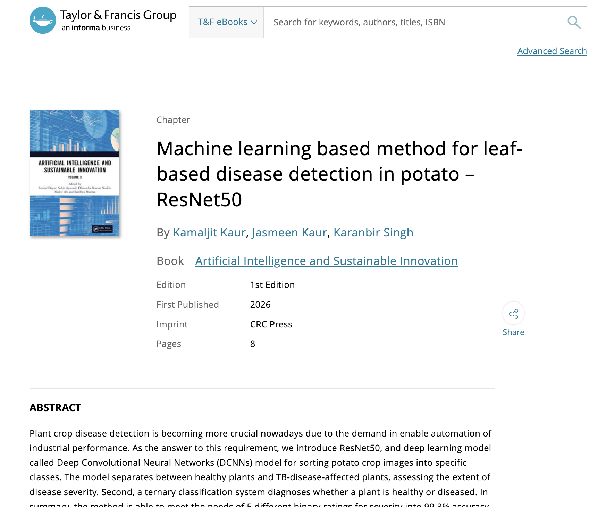
📍 Roohaniyat | Feb 2023 - Nov 2023
Contributed to Roohaniyat, a startup building design-focused web solutions for a growing customer base in Punjab, India, by developing React pages, improving engagement by 20%, and reducing page load time by 15% through REST APIs and database integration.
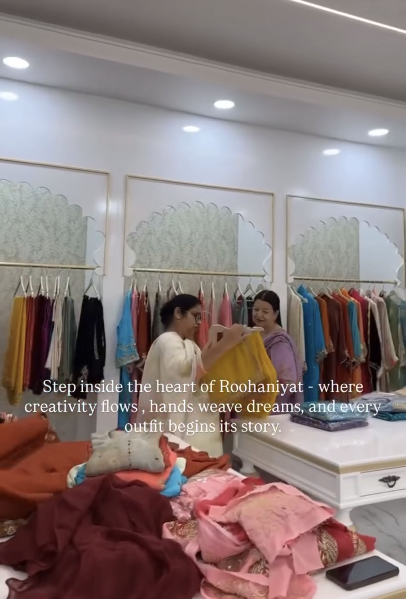
📍 DIFM.tech | Jun 2021 - Sep 2021
Managed social media channels, created content strategies, and engaged with digital communities to grow brand presence and online reach.
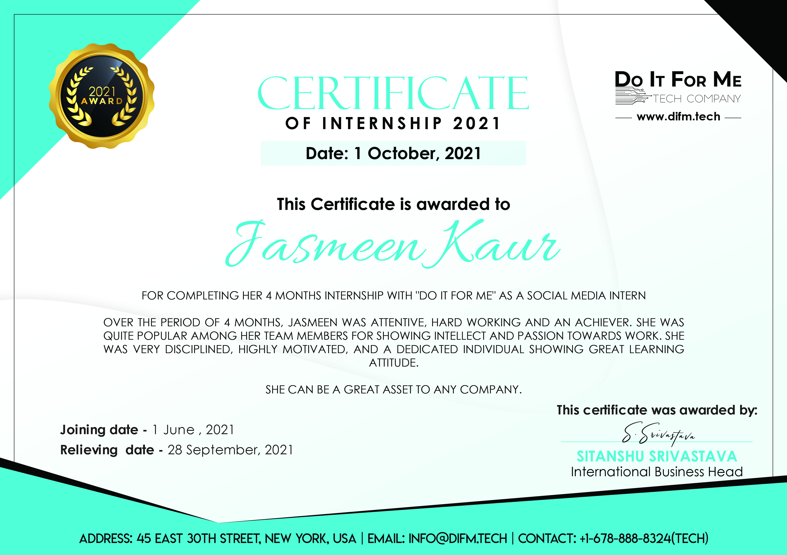
📍 University of Windsor | Sep 2025 - Present
Specializing in Artificial Intelligence, Machine Learning, and Distributed Systems.
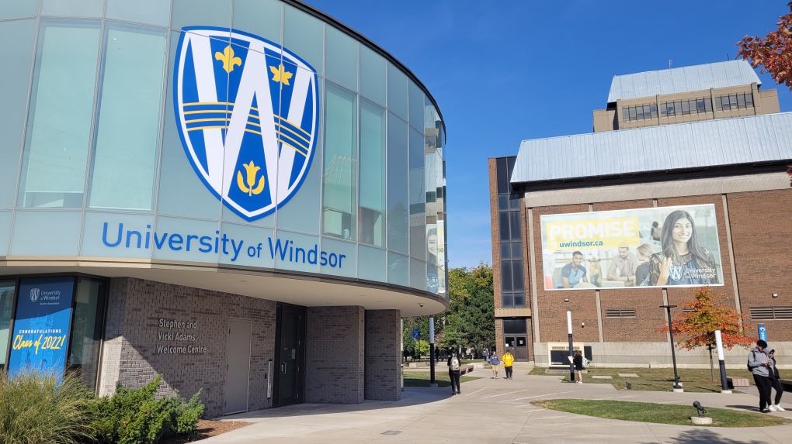
📍 Guru Nanak Dev University | Sep 2020 - May 2024
Focus on Computer Networks, Databases, and Data Structures & Algorithms.
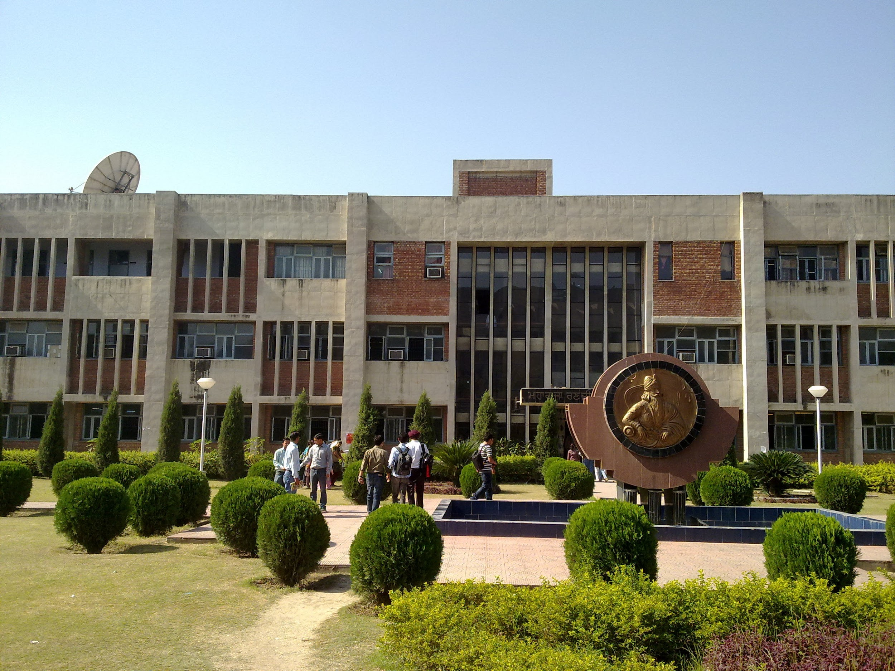
📍 LinkedIn Learning & AWS | 2025 - 2026
Completed AWS Cloud Foundations and UNIX Essential Training.
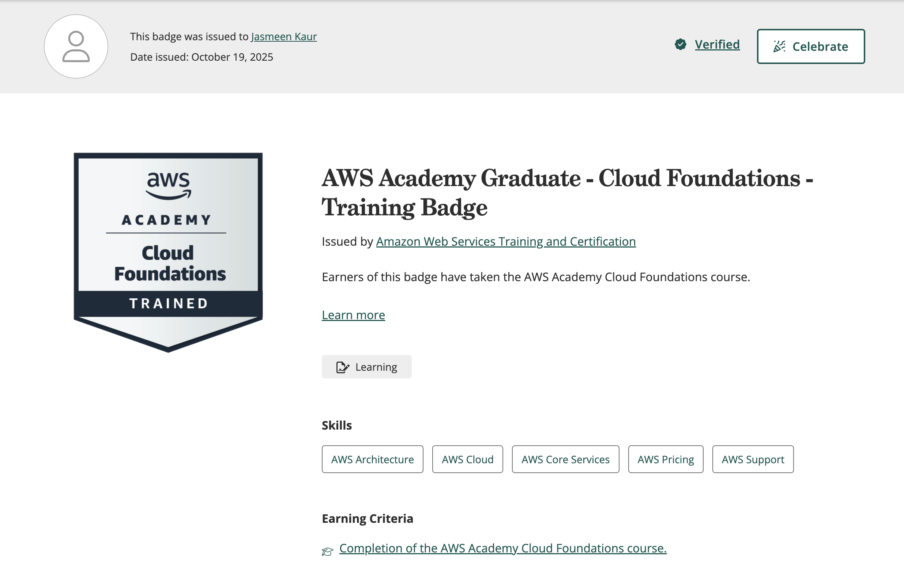
A showcase of full-stack, data, and ML systems.
Data Engineering & Machine Learning
End-to-end real-time data pipeline tracking banking transactions. Built with a scalable architecture to ingest and transform data before passing it through an XGBoost model to detect anomalies and fraudulent behavior.
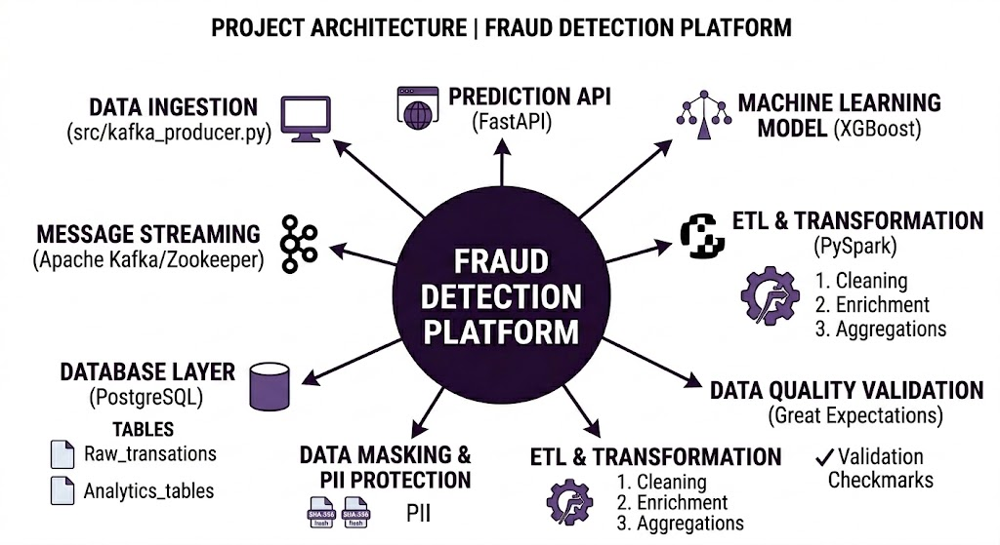
Deep Learning for Agricultural Disease
Engineered a Flask-based web application for automated plant disease detection. Trained a ResNet50 CNN using TensorFlow to classify potato leaf blight across multiple disease categories.
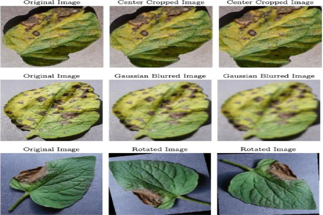
Full-Stack Web Application
Developed a complete full-stack contact management system using React and Node.js. Implemented secure RESTful APIs supporting full CRUD operations with JWT-based authentication.
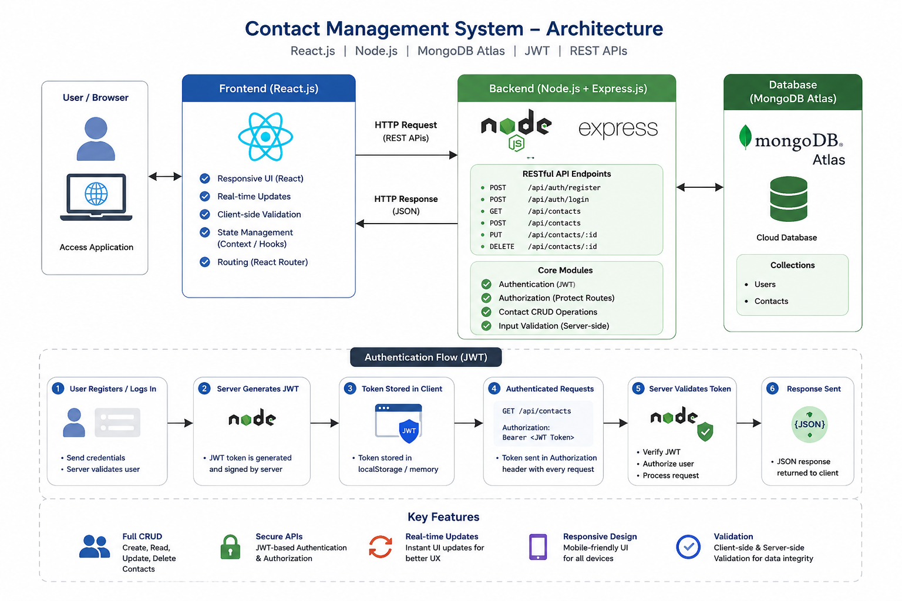
Claude Code Skills for Engineering Workflows
Built a suite of reusable AI-powered Claude Code Skills that automate tedious parts of code review. Includes PR reviewer, test generator, and changelog writer to accelerate real engineering workflows.
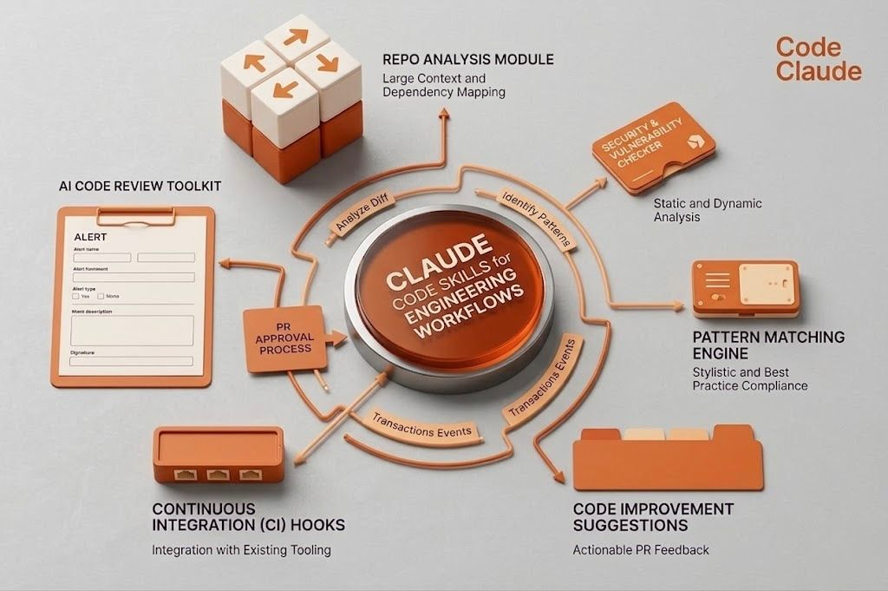
Because my journey is more than projects. Hover on each tile to know more!
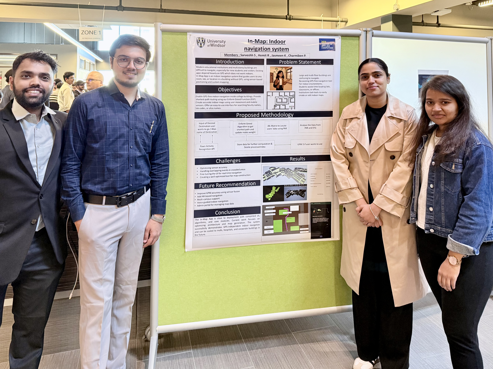
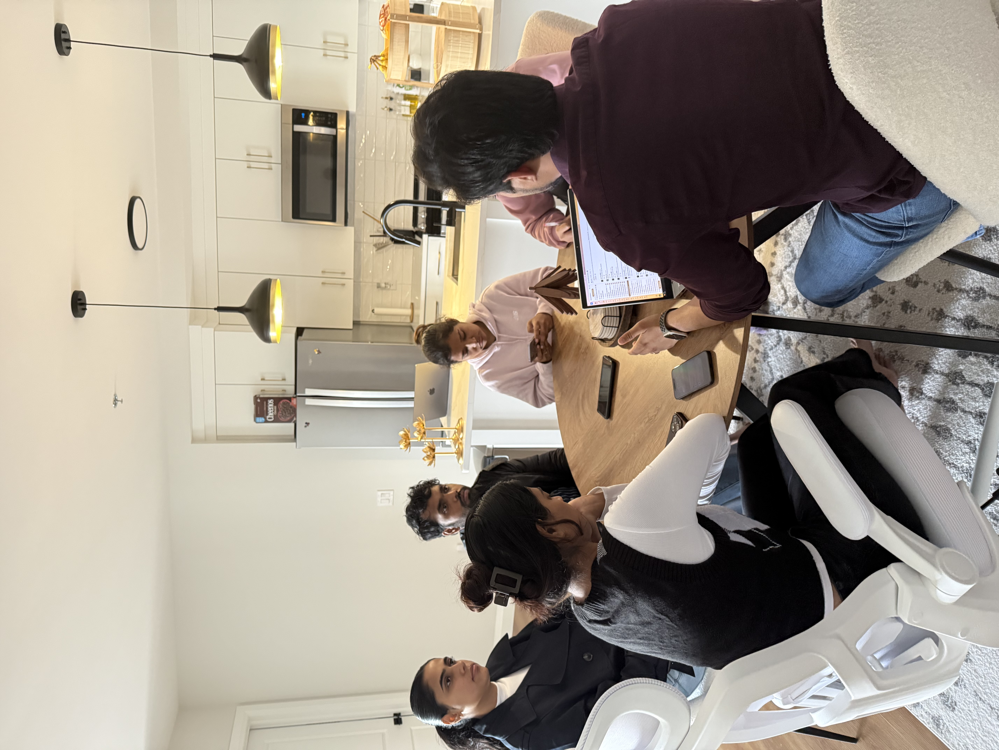
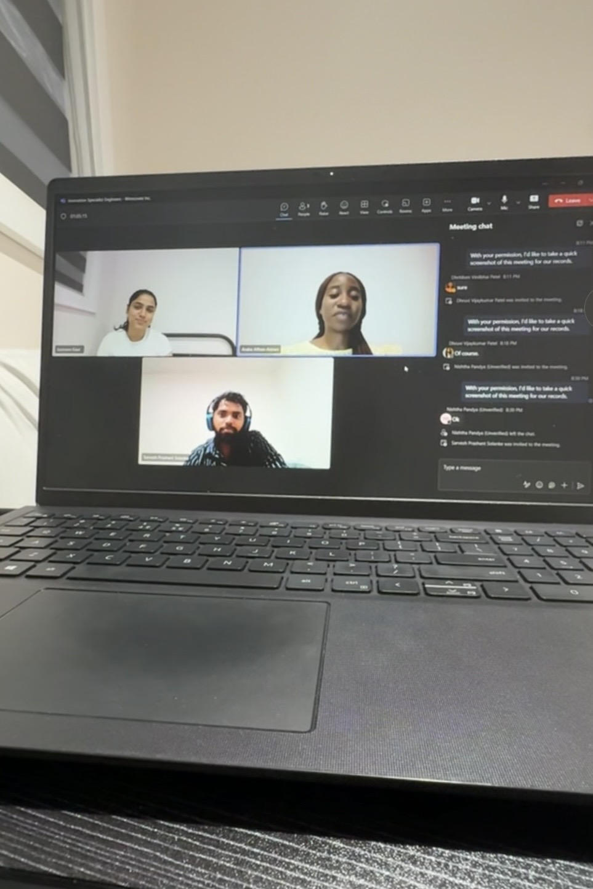